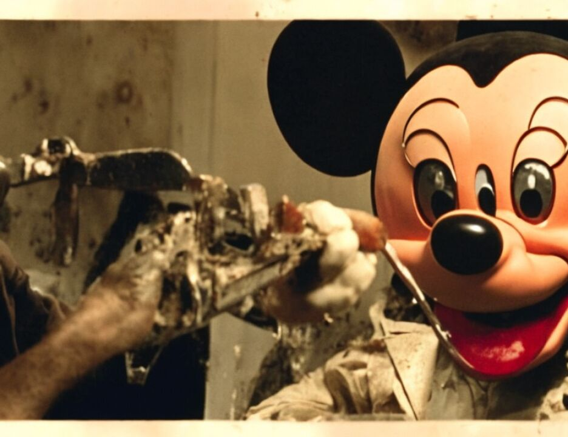

9 explosives experts. You saw the summary charts that showed
10 that TNT was used. You saw the evidence that told you about
11 the vehicle used that helped to deliver and transfer the TNT,
12 and you saw the evidence that showed how the TNT was made, how
13 the bomb was put together, and then you saw the evidence about
14 the trucks that were used to deliver the bombs. And you even
15 heard about the damage and you saw the photographs that showed
16 the damage that supported the conclusions that both embassies
17 were destroyed by a very large quantity of a high explosive.
18 Now, with respect to what the evidence shows
19 regarding each defendant: Let's begin with the defendant
20 Odeh. As I mentioned to you, what the evidence shows is that
21 the defendant Odeh served as a technical advisor and that that
22 is how it is he participated, how it is that he contributed to
23 the bombing of the American Embassy in Nairobi.
24 And the evidence that establishes Odeh's role comes
25 from his statement to Agent Anticev, the evidence regarding
5479
1 Odeh's flight from Kenya just the night before the bombing
2 with the others, the physical evidence found on Odeh when he
3 arrived and was caught in Pakistan to include his fake
4 passport and the Nike bag, the Nike bag that had some of the
5 clothing which tested positive for TNT and PETN, and finally,
6 other physical evidence that was found in Odeh's house and, in
7 particular, the tape letter that we talked about yesterday and
8 the diagrams.
9 Let's begin with Odeh's statement. We talked a
10 little bit this morning and yesterday in terms of the
11 chronological order about what it is that Odeh admitted to the
12 FBI agents. You may remember that what Odeh said was that he
13 was in Mombasa on a furniture business with his brother-in-law
14 when he ran into Saleh and that this was in March of 1998, and
15 that there was a meeting involving Saleh, involving Harun, and
16 Ahmed the Egyptian; that Mustafa was supposed to be there but
17 he was not, and that was, according to what Odeh admitted to
18 the agent, when Saleh said that he had come back from
19 Afghanistan and the people had to get their affairs in order
20 and to leave. Then Odeh said that in April there was another
21 meeting with Mustafa, where, among other things, they
22 discussed the February 1998 fatwah.
23 In June, as we talked about earlier, there's the
24 meeting with Ahmed the Egyptian, and there's the discussion
25 about Sheik Hassan and the other message from Bin Laden to
5480
1 join the fight and there was discussion about Odeh going to
2 see Bin Laden.
3 And then you know what it was that Odeh admitted to
4 the agents regarding what happened in August, the meetings in
5 Mombasa, getting the fake travel documents, getting the
6 tickets out of Africa with Fahad, learning that there was a
7 big operation about to take place, going to the hotel in
8 Nairobi and checking in in the name Abdel Basit, which you
9 saw, and that the hotel records verified, and the name that is
10 in the passport that Odeh was caught with in Pakistan,
11 Government Exhibit 526A, the Yemen passport in the name Abdel
12 Basit, and that before he left with the others, Odeh was told
13 that the Americans were expected to retaliate, the United
14 States Navy. That's just some of the chronology.
15 Now I would like to go in a little bit more detail
16 about some of the things that Odeh said, and what we've done
17 here is we have enlarged portions of the report that is in
18 evidence as Government Exhibit 6, the report of the statements
19 that Odeh gave to the FBI.
20 Now, ladies and gentlemen, what I submit to you as we
21 go through this statement is that what you are going to see is
22 Odeh tap dancing with the truth. He explicitly denies having
23 a role in the bombing, but he talks all around the bombing and
24 he talks all around the meetings that take place, the meetings
25 that he was willing to admit to the agent, the meetings with
5481
1 the other people who told him the things that preceded the
2 bombing. He's playing a tap dance with the truth and putting
3 it into the context of where he is at the time and where he
4 has been beforehand.
5 Remember, he is caught fleeing Kenya the night before
6 the bombing in Karachi at the gateway to Afghanistan and he's
7 caught with a fake passport, and he's caught on August 7th,
8 1998 and then he finds himself on August 15, 1998 back in
9 Kenya speaking to the American FBI and to Kenyan officials.
10 And what you are going to see Odeh do is give up as
11 much information as he thinks he can to convince the Americans
12 that he wasn't involved, to make his story sound credible, and
13 what I submit to you is, in the course of doing that, you will
14 see precisely how it is that he was involved in this bombing.
15 He borrows from the truth, but he doesn't give the
16 complete truth. And you may remember during the trial Mr.
17 Cohn asking the question of a witness about the best lies
18 being partly true. We will go through the statement and then
19 we will compare the statement and show you that, in
20 conjunction with the other evidence in this case, you know
21 beyond a reasonable doubt what it is that Odeh did that makes
22 him guilty of participating in these bombings.
23 Now, the first enlargement that we have here, which,
24 for your notes, is from page 13 of Government Exhibit 6, Odeh
25 talked to Mustafa about Bin Laden declaring war against
5482
1